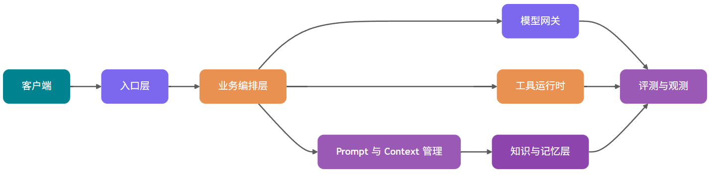

很多团队做 AI 应用时，第一天都很兴奋：写一个 Prompt，调一下大模型 API，页面上很快就能跑出一个“智能客服”“知识库问答”或者“报告生成助手”。
然后进入第二周，问题开始冒出来：同一个问题今天答对、明天答偏；用户没有权限的资料被检索进上下文；Prompt 改了一行，线上效果突然变差却回滚不了；模型调用超时，前端一直转圈；Token 账单飙升，没人知道钱花在哪；出了事故，只能从一堆日志里猜当时模型到底看到了什么。
分水岭就在这里：Prompt Demo 证明的是模型能回答，生产系统要证明的是系统能长期、稳定、可控地回答。
本篇文章你可以理解：
1.Prompt Demo 和生产系统差距为什么巨大：稳定性、权限、成本、观测、评测和数据治理分别卡在哪里。
2.生产级 AI 应用应该怎么分层：入口层、业务编排、模型网关、Prompt/Context、RAG、Memory、Tool、异步任务、评测观测如何协作。
3.同步、流式、异步三种交互模式怎么选：不要把所有请求都做成“等模型返回”。
4.模型网关、工具权限、RAG 与 Memory 的关键设计：让 AI 应用从“能跑”变成“可管”。
5.Java 后端如何落地：模块拆分、核心表设计、服务接口和面试回答思路。
一、Demo 架构为什么扛不住生产流量
先看一个最常见的 Demo：
前端输入问题 -> 后端拼 Prompt -> 调用模型 API -> 返回答案这条链路能演示产品想法，但它缺了生产系统最关键的 6 件事。
| 维度 | Prompt Demo | 生产级架构 |
|---|---|---|
| 稳定性 | 单模型、单调用，失败就报错 | 多模型路由、重试、fallback、熔断、降级响应 |
| 权限 | 默认用户能问什么就查什么 | 检索前权限过滤，工具调用按用户和租户鉴权 |
| 成本 | 只看一次调用能不能成功 | Token 预算、模型分层、缓存、成本归因和限额 |
| 可观测 | 记录用户问题和最终答案 | 记录 Prompt、检索片段、工具调用、模型输出、Token、延迟、错误 |
| 评测 | 靠人工试几条样例 | 固定评测集、线上抽样、LLM-as-Judge、人工复核闭环 |
| 数据治理 | 文档直接入库，日志随便存 | PII 脱敏、数据留存、审计、版本化、删除和授权链路 |
你看到这里可能会想：这不就是给原来的接口多包几层吗？
不只是多包几层。AI 应用的复杂度来自一个很特殊的事实：核心决策逻辑有一部分交给了概率模型。传统后端里的 if-else 逻辑虽然也会出错，但你能定位到具体代码行；LLM 出错时，原因可能是 Prompt 版本、上下文顺序、检索噪声、工具描述、模型采样、权限过滤、输出解析中的任何一环。
所以，生产级 AI 架构要做的事，是把模型周边的输入、执行、输出和反馈全部工程化。
二、生产级 AI 应用的标准分层架构
我更推荐把 AI 应用拆成 9 层。不同公司命名会有差异，但职责边界大体一致。

1.入口层：把用户请求变成可治理的任务
入口层不能只当 Controller 用。它至少要做这些事：
①认证鉴权：确认用户、租户、角色、数据范围。
②请求标准化：把 Web、App、API、Webhook、定时任务统一成内部任务模型。
③限流与防刷：按用户、租户、模型能力和业务场景限流。
④幂等控制：异步任务、工具调用、支付类操作必须有幂等键。
⑤敏感内容预处理：PII 脱敏、恶意输入检测、Prompt 注入初筛。
入口层的关键产物不是一个字符串，而是一个结构化请求：
public record AiRequest(
String requestId,
String tenantId,
String userId,
String sceneCode,
String input,
Map<String, Object> variables,
PermissionScope permissionScope
) {
}
2.业务编排层：决定这次请求怎么跑
业务编排层相当于 AI 应用的大脑外壳，负责判断：
①这次是普通问答、RAG 问答、Agent 多步任务，还是批处理任务？
②需要哪些上下文：历史会话、用户画像、知识库、实时业务数据？
③是否允许调用工具？哪些工具需要二次确认？
④应该走同步、流式，还是异步？
⑤输出要不要进入评测、人工审核或后处理？
这层别把所有逻辑都塞进一个“超级 Prompt”。能确定的规则用代码，无法穷举的语言理解交给模型。边界清楚，系统才容易排查。
3.模型网关：把模型调用变成基础设施
模型网关负责统一接入 OpenAI、Anthropic、Google Gemini、私有化模型、Embedding 模型、Rerank 模型等供应商能力。它隐藏不同 API 的差异，对上提供稳定接口。
模型网关的核心能力包括：
①多模型路由：按场景、成本、延迟、语言、上下文长度和成功率选择模型。
②fallback：主模型失败、超时、限额不足时切到备用模型。
③限流与熔断：避免供应商异常拖垮业务线程池。
④Token 预算：估算输入输出 Token，超预算时压缩上下文或降级模型。
⑤成本归因：按租户、用户、场景、Prompt 版本记录成本。
⑥统一观测：记录模型请求、响应、错误、TTFT、总延迟、Token usage。
OpenAI、Anthropic、Google 等官方文档都在持续更新模型、工具、流式、评测和成本相关能力。涉及具体模型名、上下文窗口和价格时，建议在系统配置里动态维护，并标注“以官方文档最新展示为准”，不要写死在业务代码里。
4.Prompt 与 Context 管理：不要把 Prompt 当代码里的字符串
Prompt 在生产环境里应该被当成一种可版本化配置，不能散落成代码里的多行字符串。
它至少需要支持：
①模板版本：每次修改生成新版本，旧版本可回放。
②变量注入：业务变量、用户输入、检索结果、工具结果分区注入。
③灰度发布：按租户、用户比例、场景开关选择 Prompt 版本。
④快速回滚：线上效果变差时能切回稳定版本。
⑤审计记录：谁在什么时间改了什么，为什么改。
⑥运行时绑定：每次请求记录使用的 Prompt 名称、版本和变量摘要。
一个很实用的规则：Prompt 变更必须像代码变更一样可追踪，但发布频率可以比代码更高。
Langfuse 官方文档把 Prompt Management、Tracing、Evaluation 放在同一套 LLM 工程平台里，本质原因也在这里：Prompt 不只影响生成文本，它会影响检索、工具调用、成本和评测结果。
5.RAG、Memory、Tool：三类上下文不要混在一起
很多 AI 系统越做越乱，是因为把所有信息都叫“上下文”。
Shirley 建议把它拆开：
| 类型 | 存什么 | 生命周期 | 核心风险 |
|---|---|---|---|
| RAG | 企业文档、产品手册、制度、代码文档、工单知识 | 由知识库更新决定 | 检索不到、越权召回、过期文档、引用错配 |
| Memory | 用户偏好、历史决策、长期画像、任务经验 | 随用户和会话演化 | 错误记忆固化、隐私泄露、过时记忆干扰 |
| Tool | 查询订单、创建工单、发邮件、改配置、查数据库 | 运行时按需调用 | 参数错误、权限越界、敏感操作误执行 |
三者底层都可能用向量检索、结构化存储和重排，但服务目标完全不同。RAG 提供共享知识源，Memory 提供个性化背景，Tool 连接真实业务系统。
高频盲区：不要把 Memory 当成个人版 RAG 随便塞。 记忆一旦写错，后续每轮都会被污染。生产环境里，Memory 写入通常要异步执行，并经过 Schema 校验、置信度过滤、过期策略和人工审核入口。
三、同步、流式、异步三种交互模式怎么选
AI 应用不是所有请求都适合 HTTP 同步等待。交互模式选错，用户体验和系统稳定性都会被拖垮。
| 模式 | 适合场景 | 优势 | 风险 | 后端设计要点 |
|---|---|---|---|---|
| 同步请求 | 短问答、分类、抽取、低延迟小任务 | 实现简单，调用链清晰 | 超时敏感，容易占满线程 | 设置短超时、快速失败、结果缓存 |
| 流式响应 | 聊天、长答案、代码生成、语音前置文本 | 首字体验好，用户感知等待更短 | 中途失败处理复杂，前端状态更多 | SSE/WebSocket、TTFT 监控、可取消生成 |
| 异步任务 | 报告生成、批量评测、长文档分析、多工具任务 | 可排队、可重试、可恢复 | 任务状态和通知链路复杂 | 任务表、队列、进度事件、幂等和补偿 |
Shirley倾向性建议：
①能在 3 秒内稳定完成的任务，优先同步。
②用户需要立刻看到模型开始输出的任务，优先流式。
③依赖长文档、多轮工具调用或批量处理的任务，必须异步。
别为了“看起来像 ChatGPT”把所有接口都做成流式。比如标签分类、风险评分、路由决策这类内部调用，流式没有太大收益，反而会增加链路复杂度。
四、Prompt 管理：从模板字符串到版本系统
生产级 Prompt 管理可以按 5 个对象建模：
prompt_template：Prompt 基本信息，例如名称、场景、类型、状态。
prompt_version：具体内容、变量定义、模型参数、创建人、变更说明。
prompt_release：某个版本发布到哪个环境、哪些租户、多少流量。
prompt_run：每次调用绑定的 Prompt 版本、变量摘要和模型输出。
prompt_eval_result：某个 Prompt 版本在评测集上的结果。
核心表可以这样设计：
| 表名 | 关键字段 | 作用 |
|---|---|---|
ai_prompt_template |
id、name、scene_code、type、status |
管理 Prompt 逻辑名称 |
ai_prompt_version |
id、template_id、version_no、content、variables_schema、model_config |
保存可回放的 Prompt 内容 |
ai_prompt_release |
id、template_id、version_id、env、traffic_ratio、tenant_scope |
控制灰度和回滚 |
ai_prompt_run |
id、request_id、version_id、variables_hash、input_tokens、output_tokens |
连接线上请求与 Prompt 版本 |
变量注入时要避免两个坑：
1.变量未经清洗直接拼接：用户输入、工具结果、检索片段都可能携带注入指令。应该用明确的分区标签和转义策略隔离。
2.Prompt 版本和代码版本脱节：Prompt 里新增了变量，代码没传，线上直接生成空上下文。建议 variables_schema 做运行时校验。
一个最小接口示例：
public interface PromptService {
RenderedPrompt render(RenderPromptCommand command);
PromptVersion publish(PublishPromptCommand command);
void rollback(String templateId, String targetVersionId);
}五、模型网关：多模型路由、fallback 与成本控制
模型网关最容易被低估。很多团队一开始直接在业务代码里调用某个供应商 SDK，等到要换模型、做灰度、查成本时才发现处处耦合。
1.模型网关策略对比
| 策略 | 核心逻辑 | 适合场景 | 风险 |
|---|---|---|---|
| 固定模型 | 某个场景固定调用一个模型 | 早期系统、低复杂度任务 | 成本和稳定性受单供应商影响 |
| 成本优先路由 | 默认走低成本模型，失败或低置信度再升级 | 分类、摘要、轻量问答 | 低成本模型误判会传导到下游 |
| 质量优先路由 | 高价值请求优先走高能力模型 | 法务、金融、医疗辅助、复杂 Agent | 成本高，需要预算控制 |
| 延迟优先路由 | 按 P95/P99 延迟和可用区选择模型 | 实时聊天、语音、在线客服 | 可能牺牲复杂推理质量 |
| 多模型投票 | 多模型并行生成，再由评审器选择 | 高风险内容、关键报告 | 成本和延迟都高 |
| fallback 链 | 主模型失败后切备用模型 | 大多数生产系统 | 备用模型能力差异会影响输出一致性 |
2.Token 预算怎么做
模型网关至少要在调用前做一次预算：
预计输入 Token = System Prompt + 用户输入 + 历史消息 + RAG 片段 + Memory + Tool Schema预计总 Token = 预计输入 Token + 最大输出 Token如果超预算，别直接截断字符串。更稳的降级顺序是：
1.删除低相关 RAG 片段。
2.压缩早期历史消息。
3.减少工具 Schema，只保留候选工具。
4.降低最大输出长度。
5.切换长上下文模型。
6.拒绝执行并提示用户缩小范围。
OpenTelemetry 的 GenAI 语义约定已经覆盖模型名、输入 Token、输出 Token、响应状态等字段。无论你用 Langfuse、LangSmith，还是自建观测平台，都建议尽量向这类通用字段靠拢，后续迁移和统一监控会轻松很多。
六、工具调用与权限：让模型只提出动作，系统决定能不能做
Tool Calling 很容易让人产生错觉：模型返回了一个函数名和参数，系统执行就行。
这在生产环境很危险。
更稳的心智模型是：模型只能提出“想调用什么工具”，真正执行前必须经过系统校验。
工具运行时至少要包含 6 道关：
| 环节 | 作用 |
|---|---|
| 工具注册 | 声明工具名称、描述、参数 Schema、权限标签、风险等级 |
| 工具检索 | 从大量工具中选出当前任务相关的少数工具，避免上下文膨胀 |
| 参数校验 | 用 JSON Schema 或强类型对象校验必填、格式、枚举、范围 |
| 权限校验 | 按用户、租户、角色、资源 ID 做后端鉴权 |
| 二次确认 | 删除、支付、发送消息、改配置等敏感操作必须让用户确认 |
| 审计日志 | 记录模型建议、最终参数、执行人、执行结果和回滚信息 |
Anthropic 和 OpenAI 的官方工具调用文档都强调工具定义、参数结构和调用处理。落到工程里，再补一条硬规则：别让模型替你做权限判断。
工具接口可以这样定义：
public interface AiTool {
ToolDefinition definition();
ToolResult execute(ToolExecutionContext context, Map<String, Object> arguments);
}工具定义里要有风险等级：
public enum ToolRiskLevel {
READ_ONLY,
WRITE_LOW_RISK,
WRITE_HIGH_RISK
}对于 WRITE_HIGH_RISK，编排层必须把工具调用转换成“待确认动作”，不能直接执行。
七、RAG 与 Memory：共享知识和个性化记忆怎么协作
RAG 和 Memory 都会把外部信息塞进上下文，但它们的治理方式不同。
1.一次请求里的协作顺序
推荐顺序如下：
1.入口层确认用户身份和权限范围。
2.Memory 服务检索用户相关偏好和长期事实。
3.RAG 服务在权限范围内检索共享知识库。
4.Context 管理层对两类结果分别去重、过滤、压缩。
5.编排层把 Memory 放进“用户背景”区域，把 RAG 放进“证据资料”区域。
6.模型输出时要求区分“基于资料的事实”和“基于用户偏好的表达方式”。
这套顺序主要是为了避免上下文污染。
2.怎么避免上下文污染
| 污染类型 | 典型表现 | 防护方式 |
|---|---|---|
| RAG 噪声污染 | 检索到无关文档，模型被带偏 | Hybrid Search、Rerank、Top-N 压缩、引用校验 |
| 权限污染 | 用户拿到无权访问的文档片段 | 检索前 ACL 过滤，租户隔离，审计召回结果 |
| Memory 错误固化 | 用户一次临时说法被当成长期偏好 | 写入置信度、过期时间、用户可编辑、人工复核 |
| 新旧事实冲突 | 旧版本制度和新版本制度同时进入上下文 | 版本字段、时间过滤、冲突检测 |
| Prompt 注入污染 | 文档里写着“忽略前面规则” | 文档内容分区、指令优先级、注入检测 |
Shirley经验是：RAG 和 Memory 的结果不要直接拼成一段“背景资料”。要给模型清晰标注来源、时间、权限和可信度。模型看到的上下文越有结构，越不容易把“用户偏好”“公司制度”“工具结果”混成一类信息。
八、可观测与评测：没有回放，就没有优化
AI 应用排查问题时，最怕只看到最终答案。
一次完整请求至少要记录这些数据：
| 类别 | 建议记录 |
|---|---|
| Prompt | 模板名、版本、变量摘要、最终渲染后的消息结构 |
| 检索 | Query、召回片段、分数、来源、权限过滤结果、Rerank 排名 |
| Memory | 命中的记忆、记忆来源、更新时间、置信度 |
| Tool | 工具名称、参数、权限结果、执行耗时、返回摘要、错误 |
| 模型 | 供应商、模型名、采样参数、输入输出 Token、finish reason |
| 延迟 | 入口耗时、检索耗时、模型 TTFT、总耗时、工具耗时 |
| 成本 | 输入成本、输出成本、缓存命中、按租户和场景归因 |
| 结果 | 最终答案、结构化解析结果、用户反馈、评测分数 |
Langfuse、LangSmith 和 OpenTelemetry 的官方文档都把 tracing、datasets、evaluators、token usage、latency 作为 LLM 应用观测的重要对象。工具可以不同，但你要抓的信号大体相同。
1.评测应该怎么做
评测别只问“答案好不好”。要拆成链路指标：
Context Recall：正确证据有没有被召回。
Context Precision：放进上下文的片段有多少是有用的。
Faithfulness：答案是否忠于给定证据。
Answer Relevancy：答案是否回应了用户问题。
Tool Success Rate：工具调用是否成功完成。
Format Valid Rate：结构化输出是否能被解析。
Cost per Success：每次成功回答的平均成本。
LLM-as-Judge 可以用于自动评测，但不能当唯一裁判。它适合做大规模初筛、回归对比和线上抽样，关键业务仍要保留人工复核、规则校验和用户反馈。
一个实用闭环是：
线上失败样本 -> 进入数据集 -> 固定版本回放 -> 定位 Prompt/RAG/Tool/模型问题 -> 灰度新策略 -> 对比指标 -> 再发布没有回放，就只能靠感觉调 Prompt。靠感觉调出来的系统，线上很难稳住。
九、安全与合规：AI 应用的风险入口更多
AI 应用的安全面比传统 CRUD 系统更宽。因为用户输入、检索文档、工具返回、历史记忆都可能影响模型行为。
| 风险 | 说明 | 处理建议 |
|---|---|---|
| PII 泄露 | 日志、Prompt、评测集里包含手机号、身份证、邮箱等 | 入库前脱敏，敏感字段加密，最小化留存 |
| 权限绕过 | 检索或工具调用绕过业务 ACL | 检索前过滤，工具执行前二次鉴权 |
| Prompt 注入 | 用户或文档诱导模型忽略系统规则 | 内容分区、指令优先级、注入检测、拒答策略 |
| 数据留存失控 | 模型请求和观测日志保存过久 | 按租户和场景配置留存周期 |
| 训练数据风险 | 把用户敏感数据用于微调或评测 | 明确授权、脱敏、隔离、可删除 |
| 高风险动作误执行 | 模型误调用删除、支付、发信等工具 | 风险分级、二次确认、审计和补偿 |
这里有个容易忽略的细节：安全策略不能只写在 Prompt 里。Prompt 可以提醒模型“不要泄露隐私”，但权限过滤、脱敏、审计、确认流必须由代码和基础设施强制执行。
十、Java 后端落地建议
如果用 Java 做生产级 AI 应用，我建议按“领域能力”拆模块，别按供应商 SDK 拆模块。
1.模块拆分
| 模块 | 职责 |
|---|---|
ai-api |
对外 REST/SSE/WebSocket 接口，请求鉴权和协议适配 |
ai-orchestrator |
业务编排、交互模式选择、任务状态机 |
ai-prompt |
Prompt 模板、版本、灰度、渲染、回滚 |
ai-context |
上下文组装、Token 预算、历史压缩、上下文分区 |
ai-gateway |
模型路由、fallback、限流、熔断、成本统计 |
ai-rag |
知识库检索、权限过滤、Rerank、引用管理 |
ai-memory |
用户记忆写入、检索、冲突处理、过期策略 |
ai-tool |
工具注册、参数校验、执行、二次确认、审计 |
ai-eval |
数据集、评测任务、LLM-as-Judge、人工反馈 |
ai-observability |
Trace、指标、日志、成本、告警 |
2.核心表设计
| 表名 | 作用 |
|---|---|
ai_request_trace |
一次 AI 请求的主 Trace，记录用户、租户、场景、状态、耗时 |
ai_model_call |
模型调用明细，记录模型、参数、Token、TTFT、错误 |
ai_context_item |
上下文条目，记录来源类型、来源 ID、Token、注入位置 |
ai_rag_chunk_hit |
RAG 召回明细，记录分数、排名、文档权限、引用信息 |
ai_memory_item |
长期记忆条目，记录用户、内容、置信度、过期时间、状态 |
ai_tool_call |
工具调用明细，记录工具、参数摘要、权限结果、执行结果 |
ai_eval_dataset |
评测集元信息 |
ai_eval_case |
评测样本，包含输入、期望行为、标签 |
ai_eval_run |
某次评测任务 |
ai_eval_result |
单条样本评测结果 |
3.核心接口设计
public interface ModelGateway {
ModelResponse generate(ModelRequest request);
Flux<ModelStreamEvent> stream(ModelRequest request);
}
public interface ContextAssembler {
AssembledContext assemble(AiRequest request, ContextPolicy policy);
}
public interface RagService {
List<RagHit> retrieve(RagQuery query, PermissionScope permissionScope);
}
public interface EvaluationService {
EvalRunResult runDataset(EvalRunCommand command);
}4.一个最小请求链路
Controller
-> RequestGuard 鉴权、限流、脱敏
-> Orchestrator 选择同步/流式/异步
-> ContextAssembler 拉取 RAG、Memory、历史
-> PromptService 渲染模板版本
-> ModelGateway 路由模型并记录 Token
-> OutputParser 校验结构化输出
-> TraceService 写入观测数据如果只做一个企业知识库问答，第一阶段可以先落地 ai-api、ai-prompt、ai-gateway、ai-rag、ai-observability。Memory、Tool、Eval 可以逐步补齐。但 Trace 和 Prompt 版本不要拖到后面，它们是后续排查问题的地基。
十一、怎么讲这套架构
问“你怎么设计一个生产级 AI 应用”，别上来就说“我会用 LangChain”。
更稳的回答方式是：
1.先讲 Demo 和生产差距：稳定性、权限、成本、观测、评测、数据治理。
2.再讲分层：入口层、编排层、Prompt/Context、RAG/Memory/Tool、模型网关、异步任务、评测观测。
3.讲关键链路：一次请求如何鉴权、检索、组装上下文、调用模型、校验输出、记录 Trace。
4.讲治理能力：Prompt 版本、模型 fallback、Token 预算、工具权限、PII 脱敏。
5.最后讲评测闭环：固定样本集、线上失败样本回放、LLM-as-Judge 和人工复核结合。
十二、核心要点回顾
1.Prompt Demo 只证明“能回答”，生产级架构要证明“长期可控地回答”。
2.模型网关是 AI 应用基础设施，负责路由、fallback、限流、熔断、Token 预算和成本归因。
3.Prompt 必须版本化，支持变量校验、灰度、回滚和审计。
4.RAG、Memory、Tool 要分开治理，共享知识、个性化记忆和真实业务动作不能混成一团。
5.可观测和评测决定系统能不能持续变好，没有 Trace 和回放，优化基本靠猜。
6.安全策略要靠代码强制执行，Prompt 只能辅助，不能替代权限、脱敏、审计和二次确认。
高频面试问题
- Prompt Demo 到生产系统最大的差距是什么？
核心差距在工程治理。Demo 关注模型能不能答，生产系统关注稳定性、权限隔离、成本控制、可观测、评测回放和数据合规。
- 为什么需要模型网关？
模型网关把供应商差异、模型路由、fallback、限流、熔断、Token 预算、成本统计和观测统一起来，避免业务代码直接耦合某个模型 API。
- 同步、流式、异步怎么选？
短小任务走同步，长答案和聊天走流式，报告生成、批量处理、多工具任务走异步。核心判断是任务耗时、用户是否需要首字反馈、是否需要重试和恢复。
- Prompt 为什么要做版本管理？
Prompt 会直接影响输出质量、工具调用、检索策略和成本。版本管理可以支持灰度、回滚、审计和离线评测回放。
- Tool Calling 的安全边界在哪里？
模型只能提出工具调用意图，参数校验、权限校验、敏感操作确认和审计必须由后端系统完成。
- RAG 和 Memory 有什么区别？
RAG 管共享知识源，例如企业文档和产品手册；Memory 管个性化长期事实，例如用户偏好和历史决策。二者可以协作，但要分区注入上下文，避免污染。
- AI 应用可观测要看哪些指标？
至少看 Prompt 版本、检索命中、工具调用、模型输出、输入输出 Token、TTFT、总延迟、成功率、错误率、成本和评测分数。
- LLM-as-Judge 能不能替代人工评测？
不能。它适合自动化回归、线上抽样和大规模初筛，但关键业务仍需要规则校验、人工复核和用户反馈闭环。
参考资料